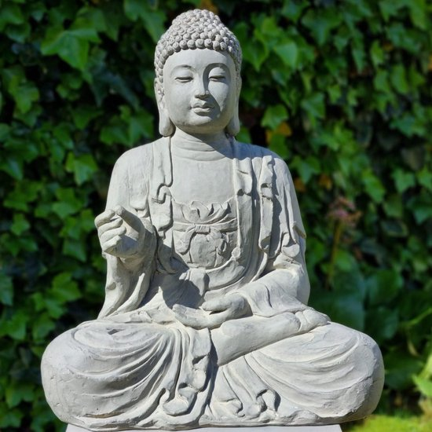

De Heilige Tuinboeddha
In het rustige Vlaamse dorp Sint-Gillis-Waas staat een ogenschijnlijk eenvoudige tuinbeeld: een Boeddha met een geheim. Voor gewone mensen is het slechts decoratie, maar voor kabouters is deze plek heilig.
Volgens eeuwenoude overleveringen is de Tuinboeddha een schakel tussen de natuurlijke en spirituele werelden. Kabouters uit alle windstreken trekken jaarlijks naar deze plek om deel te nemen aan een uiterst belangrijk ritueel: de Ceremonie van het Groeiritueel.
De Nacht van 8 op 9 Augustus
Ieder jaar, precies tijdens de nacht van 8 op 9 augustus, verzamelen kabouters zich rond het beeld. Ze brengen offers van eikeltjes, mosbloemen en dauwdruppels. Er wordt gefluisterd, gezongen, gedanst — allemaal om de zegen van de Tuinboeddha af te smeken.
Deze ceremonie is van levensbelang: alleen wie deelneemt aan het ritueel mag een jaar ouder worden. Zonder de zegening van de Boeddha zou het kaboutervolk stilstaan in de tijd — een tragedie zonder weerga.
"Hij die bij de Boeddha groeit, draagt het licht van de wortel in zijn hart." – Kabouterpriester Sijm de Stille
Wie goed luistert tijdens deze nacht, hoort misschien in de verte het gezang van kabouters dat zachtjes opgaat in de wind van Waasland...